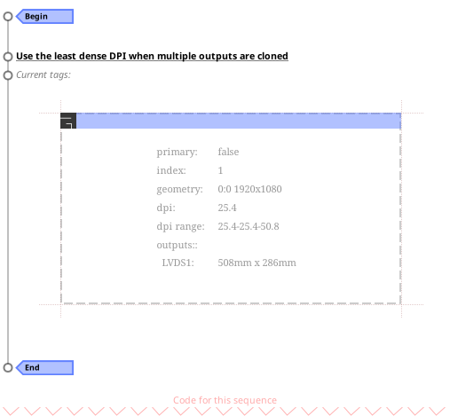
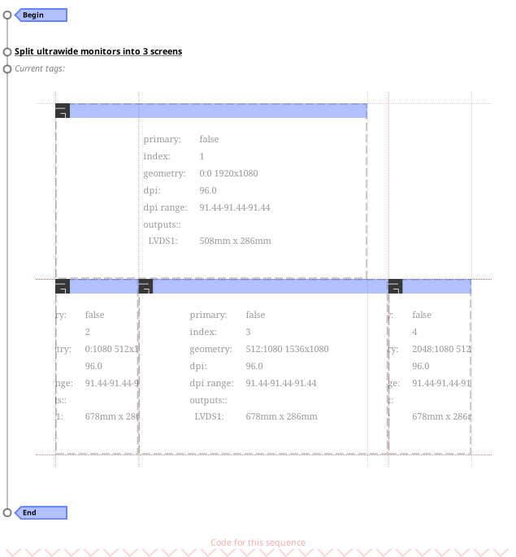
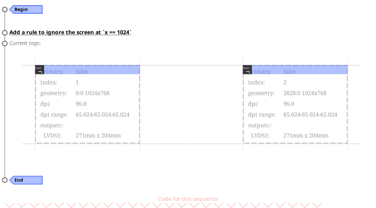

Module: ruled.screen
Rules for screens.
This is why you might want to have screen rules:
- Attach useful names to screens so they can be easily matched by client or tag rules.
- Control the various HiDPI knobs.
- Define how removing viewports should affect the screens.
- Easily handle clone mode like when a projector is connected.
- Attach various custom properties to screen objects.
- Detect and configure various "modes" like work, office or portable with different workflows.
Info:
- Copyright: 2019 Emmanuel Lepage Vallee
-
Originally authored by: Emmanuel Lepage Vallee <elv1313@gmail.com>
(Full contributors list available on our github project)
Static module functions
| ruled.screen.remove_rule_source (name) -> boolean | Remove a source. | |
| ruled.screen.append_rule (table) | Add a new rule to the default set. | |
| ruled.screen.append_rules (table) | Add a new rules to the default set. | |
| ruled.screen.remove_rule (table) | Remove a new rule to the default set. | |
| awful.tag.rules.add_rule_source (name, callback, depends_on, precede) | Add a new rule source. | |
Rule components
| properties | table | A table whose content will be used to set the target object properties. | |
| callbacks | table | A list of callback function to call after the properties have been apploed. | |
| rule | table | A table whose content will be compared to the target object current properties. | |
| rule_any | table | Similar to rule, but each entry is a table with multiple values. | |
| except | table | The negative equivalent of rule. | |
| except_any | table | The negative equivalent of rule_any. | |
| rule_every | table | Matches when one of every \"category\" of components match. | |
| rule_lesser | table | A table whose content will be compared to the target object current properties. | |
| rule_greater | table | A table whose content will be compared to the target object current properties. | |
| id | table or string or number or function | An identifier for this rule. | |
Rule matching properties
| viewport_count | The current number of (physical) monitor viewports. | |
| output_count | The number of output attached to the viewport. | |
| is_cloned | True if the viewport has multiple overlapping outputs. | |
| aspect_ratio | The screen aspect ratio. | |
| has_name | Check if one of the output is named as such. | |
| has_mm_width | Check if one of the output has this width (in millimeters). | |
| has_mm_height | Check if one of the output has this height (in millimeters). | |
| has_mm_size | Check if one of the output has this diagonal (in millimeters). | |
| has_inch_size | Check if one of the output has this diagonal (in inches). | |
| has_dpi | Check if one of the output has this dpi (dots per inch). | |
| x | The viewport horizontal position (in pixels). | |
| y | The viewport vertical position (in pixels). | |
| width | The viewport width (in pixels). | |
| height | The viewport height (in pixels). | |
| minimum_dpi | The least dense DPI of the area. | |
| maximum_dpi | The least dense DPI of the area. | |
| preferred_dpi | The least dense DPI of the area. | |
| minimum_mm_size | The smallest diagonal size (in millimeters). | |
| minimum_inch_size | The smallest diagonal size (in inches). | |
| maximum_mm_size | The largest diagonal size (in millimeters). | |
| maximum_inch_size | The largest diagonal size (in inches). | |
Extra properties available in the rules
| persistence_strategy | string | The strategy to use when the viewport is removed. | |
| screen | N/A | A screen object (or function to pick one) to move to this viewport. | |
| geometry | table | The geometry for this screen. | |
| dpi | number | The screen DPI. | |
| primary | boolean | If this screen is the primary screen. | |
| timeout | number | A timeout before destroying the screen once its viewport is gone. | |
| ignore | boolean | When set to true, the screen wont be created. | |
| name | string | The screen name. | |
| split | N/A | Split the viewport into multiple screens. | |
Static module functions
- ruled.screen.remove_rule_source (name) -> boolean
-
Remove a source.
Parameters:
- name string The source name.
Returns:
-
boolean
If the source was removed,
- ruled.screen.append_rule (table)
-
Add a new rule to the default set.
Parameters:
- table rule A valid rule.
- ruled.screen.append_rules (table)
-
Add a new rules to the default set.
Parameters:
- table rule A table with rules.
- ruled.screen.remove_rule (table)
-
Remove a new rule to the default set.
Parameters:
- table rule A valid rule.
- awful.tag.rules.add_rule_source (name, callback, depends_on, precede)
-
Add a new rule source.
A rule source is a provider called when a client initially request tags. It allows to configure, select or create a tag (or many) to be attached to the client.
Parameters:
- name string The provider name. It must be unique.
- callback The callback that is called to produce properties.
- depends_on table A list of names of sources this source depends on (sources that must be executed before name. (default {})
- precede table A list of names of sources this source have a priority over. (default {})
Rule components
- properties table
-
A table whose content will be used to set the target object properties.
See also:
- callbacks table
-
A list of callback function to call after the properties have been apploed.
See also:
- rule table
-
A table whose content will be compared to the target object current properties.
See also:
- rule_any table
-
Similar to rule, but each entry is a table with multiple values.
See also:
- except table
-
The negative equivalent of rule.
See also:
- except_any table
-
The negative equivalent of rule_any.
See also:
- rule_every table
-
Matches when one of every \"category\" of components match.
See also:
- rule_lesser table
-
A table whose content will be compared to the target object current properties.
The comparison will be made using the lesser (
<) operator.See also:
- rule_greater table
-
A table whose content will be compared to the target object current properties.
The comparison will be made using the greater (
>) operator.See also:
- id table or string or number or function
-
An identifier for this rule.
It can be anything. It will be compared with the
==operator. Strings are highly recommended.Setting an id is useful to be able to remove the rule by using its id instead of a table reference. Modules can also listen to
rule::appendedand modify or disable a rule.
Rule matching properties
- viewport_count
-
The current number of (physical) monitor viewports.
Note that a viewport can have multiple outputs.
Type:
- number
- output_count
-
The number of output attached to the viewport.
It is normally one, but if, for example, a projector is in "clone mode" with a laptop screen, there will be 2.
Type:
- number
See also:
- is_cloned
-
True if the viewport has multiple overlapping outputs.

Type:
- boolean
See also:
Usage:
-- Use the least dense DPI when multiple outputs are cloned. ruled.screen.append_rule { rule = { is_cloned = true }, properties = { dpi = function(s) return s.minimum_dpi end }, }
- aspect_ratio
-
The screen aspect ratio.
The value is obtained by dividing the width (in pixels) with the height (in pixels).
Note that the matching is permissive up to the second digit for convinience. Some advertized ratios are not accurate and/or are periodic.
This property is useful to detect ultrawide monitors and vertical monitors.

Type:
- number
Usage:
-- Split ultrawide monitors into 3 screens. ruled.screen.append_rule { rule = { aspect_ratio = 21/9 }, -- ultrawide properties = { split = { ratios = {1/5, 3/5, 1/5 } } }, }
- has_name
-
Check if one of the output is named as such.
Type:
- string
- has_mm_width
-
Check if one of the output has this width (in millimeters).
Type:
- number
- has_mm_height
-
Check if one of the output has this height (in millimeters).
Type:
- number
- has_mm_size
-
Check if one of the output has this diagonal (in millimeters).
Type:
- number
- has_inch_size
-
Check if one of the output has this diagonal (in inches).
Type:
- number
- has_dpi
-
Check if one of the output has this dpi (dots per inch).
Type:
- number
- x
-
The viewport horizontal position (in pixels).
Type:
- number
- y
-
The viewport vertical position (in pixels).
Type:
- number
- width
-
The viewport width (in pixels).
Type:
- number
- height
-
The viewport height (in pixels).
Type:
- number
- minimum_dpi
-
The least dense DPI of the area.
Type:
- number
- maximum_dpi
-
The least dense DPI of the area.
Type:
- number
- preferred_dpi
-
The least dense DPI of the area.
Type:
- number
- minimum_mm_size
-
The smallest diagonal size (in millimeters).
Type:
- number
- minimum_inch_size
-
The smallest diagonal size (in inches).
Type:
- number
Usage:
print("\n\nRULES") -- Use the least dense DPI when multiple outputs are cloned. ruled.screen.append_rule { rule_greater = { inch_maximum_size = 50 }, -- Force a low DPI for large screens. properties = { dpi = 72 }, } print("\n\nDDDDD", screen[1].data.viewport.inch_maximum_size, screen[1].dpi)
- maximum_mm_size
-
The largest diagonal size (in millimeters).
Type:
- number
- maximum_inch_size
-
The largest diagonal size (in inches).
Type:
- number
Extra properties available in the rules
- persistence_strategy string
-
The strategy to use when the viewport is removed.
The possible values are:
- replace: Replace existing non-preserved screens with this screen. If no other non-replaceable screen exist, it will split the remaining screen to make room for this one.
- destroy: Do not preserve and destroy the screen.
- relocate: Relocate if a new viewport is added at the same time. This is better then viewports are simply moved (default).
- keep: Never destroy the screen even if it gets out of sight. It is good when temporarily removing a viewport only to add it back (like moving from work to home when both have an identical external screen).
Note that sometime it is easier to relocate the tags than to relocate the screens.
See also:
- screen N/A
-
A screen object (or function to pick one) to move to this viewport.
Instead of creating a new screen object, reuse an existing one. Note that that if the screen had a viewport that still exists, it once it is moved, the rules will be applied on that viewport.
- geometry table
-
The geometry for this screen.
If none are provided, the viewport geometry will be used.
- dpi number
- The screen DPI.
- primary boolean
- If this screen is the primary screen.
- timeout number
-
A timeout before destroying the screen once its viewport is gone.
Sometime, changing the screen layout can be done with multiple steps. In that case, there will be a window of time where the viewports will be in the "wrong" state. A timeout (in seconds) longer than this window of invalidity will help avoid unnecessary screen creation and destruction.
- ignore boolean
-
When set to true, the screen wont be created.
This way the viewport can be ignored. This doesn't prevent from moving floating clients to this area or having some static fullscreen clients there like Kodi. When set, there will be no screen object, so no wallpaper, wibar or tiled client area for that viewport.

Usage:
ruled.screen.append_rule { rule = {x = 1024 }, properties = {ignore = true }, } - name string
-
The screen name.
This is useful to access the screen from ruled.client or ruled.tag without having to write screen detection code.
Note that "primary" and any output names are reserved and should not be used.
- split N/A
-
Split the viewport into multiple screens.
When using ultrawide monitors or rotating a secondary screen vertically, it is sometime helpful to split them into virtual screens with their own tags and tiled layouts.
See also: